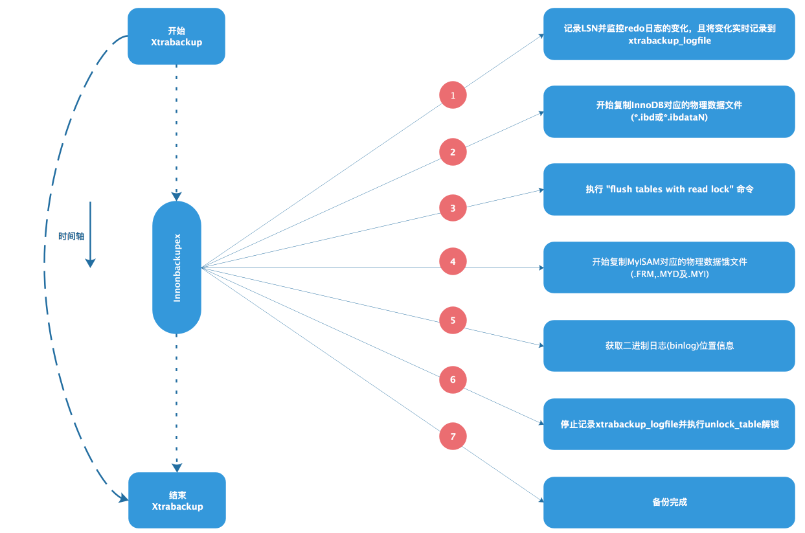
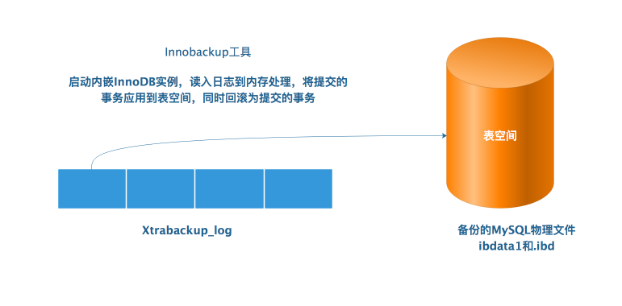

Xtrabackup 初识 什么是Xtrabackup Xtrabackup 是Percona公司专门针对MySQL数据库开发的一款开源免费的物理备份（热备）工具，可以对InnoDB和XtraDB等事物引擎的数据库实现非阻塞（即不锁表）方法的备份，也可以针对MyISAM等非事务引擎实现锁表方式备份。
Xtrabackup 特点
直接复制物理文件，备份和恢复数据的速度非常快，安全可靠
在备份期间执行的事务不会间断，备份InnoDB数据不会影响业务
备份期间不会增加太多数据库的性能压力
支持对备份的数据进行自动校验
支持全量，增量，压缩备份及流备份
支持在线迁移表以及快速创建新的从库
支持几乎所有版本的MySQL和MariaDB
Xtrabackup备份的工作原理 Xtrabackup恢复的工作原理 Percona Xtrabackup 软件是基于InnoDB 等事物引擎自带的redo日志和undo日志功能来保持备份和恢复前后数据一致性的，从而确保数据安全可靠。在InooDB引擎中存在一个redo日志（事务日志）功能。redo日志文件会存储每一个InnoDB表中的数据修改记录。当InnoDB数据启动时，会检验数据文件并保存，将已经提交到事务日志（redo日志文件）中的信息应用（提交）到数据文件并保存，然后根据undo日志信息将修改但没有提交的数据记录进行回滚（不提交到数据文件）。
Xtrabackup执行全备份的原理过程说明 当执行Xtrabackup 程序开始备份时，Xtrabackup 首先会记录当前redo日志的位置（即对应的LSN号），同时还会在后台启动一个进程持续监视redo日志文件的变化，并将变化信息都记录到Xtrabackup_logfile中，之后就会针对所有的InnoDB数据文件进行备份（复制），待InnoDB数据文件备份完成之后，再执行"flush tables with read look" 命令对整个数据库锁表，然后备份（复制）MyISAM等非事务引擎的数据文件。待数据文件全部（包括InnoDB，MyISAM数据文件和redo日志数据记录）都备份完毕之后，获取binlog二进制位置点信息，最后执行unlock tables解锁命令，恢复整个数据库的可读写状态。

Xtrabackup执行全备份恢复的过程 当执行Xtrabackup工具恢复数据时，要经过准备恢复(prepare)和实际恢复(restore)两个步骤。在准备恢复过程结束后，InnoDB表的数据（即备份的物理文件）就恢复到了复制InnoDB文件结束时的时间点，这个时间点也是全库锁表复制MyISAM引擎数据时的起点，所以最终恢复的数据和数据库的数据是一致的。全备份的数据有两部分，一部分是全备份的物理文件，一部分是Xtrabackup log日志文件，整个恢复过程如下图：

Xtrabackup执行增量备份的过程 Innobackupex增量备份的（仅对InnoDB引擎有效）核心就是复制全备之后的InnoDB中变更的"页"数据，复制时会全备中Xtrabackup)checkpoints文件对应的LSN号为依据，将大于给定的LSN号的页数据(就是增量数据)进行备份，因为要比对全备的LSN号，所以第一次增量备份是基于全备的，以后实施的每一次增量备份都要基于上一次的增量备份，最终实现备份的数据是连续哒，无缺失哒，针对MyISAM引擎的备份依然是锁表备份。
增量备份的过程具体如下：
首先在全备的Xtrabackup_checkpoints logfile中找到并记录最后一个checkpoint（lastcheckpint LSN），然后从该LSN的位置开始复制InnoDB的redo日志到Xtrabackup_logfile，然后开始复制全部的数据文件.ibd,待全部数据复制结束后，就停止复制logfile，增量备份的过程与全备份基本类型，区别就是第二步，仅复制InnoDB中变化的页数据，而非所有物理文件。
Xtrabackup执行增量恢复的过程 增量数据的恢复过程与全量备份的恢复过程类似，所不同的是增量恢复是以全备份数据为基础哒，增量恢复的数据主要涉及全备的数据，增量的数据，Xtrabackup_log日志文件。恢复过程是先将增量 备份中变化的页数据应用到全备数据中，然后，读取Xtrabackup_log应用redo数据到全备数据中，同时回滚未提交的事务；
开始安装Xtrabackup 系统环境说明 1 2 3 4 5 6 [root@db1 ~]# cat /etc/redhat-release CentOS Linux release 7.5 .1804 (Core) [root@db1 ~]# uname -r 3.10 .0 -862 .el7 .x 86 _64 [root@db1 ~]# uname -m x 86 _64
安装Xtrabackup 1 2 3 4 5 6 7 8 9 10 11 [root@db1 ~] [root@db1 ~] [root@db1 ~] [root@db1 ~] lrwxrwxrwx 1 root root 10 Jun 25 15:21 /usr/bin/innobackupex -> xtrabackup -rwxr-xr-x 1 root root 12430552 Nov 23 2017 /usr/bin/xtrabackup
到此为止Xtrabackup安装完成；
Xtrabackup备份工具说明 Xtrabackup软件包含那些 Xtrabackup命令
Xtrabackup命令是专门用于对InnoDB和XtraDB等事务引擎的数据库热备份的工具，不能用于备份MyISAM等其他类型的引擎数据，其主要特别是备份数据时完全不用锁表。
Innobackupex命令
Innobackupex命令是将上述Xtrabackup命令使用prel脚本进行二次封装的工具，除了可以用于InnoDB和XtraDB等引擎之外，还可以备份MyISAM及多种引擎混合使用的场景，该命令的主要 特点是备份事务引擎数据而不同锁表，可以备份非事务引擎数据，但要锁表。
Innobackupex工具语法介绍 Innobackupex语法
1 innobackupex [--user =name] [--host =name] [--password =WORD] [--port =PORT] [--socket =SOCKET] [--defaults-file =MY.CNF] PATH
相关参数
–user=USER # 用于备份数据的用户
–password=PASSWD # 用于备份数据的用户对应的密码
–port=PORT # 数据库端口
–host=HOST # 备份的主机，主机可以是远程数据库的服务器
–defaults-file # 指定MySQL的配置文件备份
–defaults-group-GROUP-NAME # 在多实例的时候使用
–databases # 指定需要备份的数据库，多个数据库之间以空格分开
–incremental # 增量备份，后面跟要增量备份的路径
–incremental-basedir=DIRECTORY # 增量备份使用，上一次(全备)增量备份所在的目录
–incremental-dir=DIRECTORY # 增量备份还原的时候用来合并增量备份到全备份，指定增量备份的路径
–no-timestamp # 生成的备份文件不以时间戳为目录
–slave-info # 会记录主库binlog的位置点，并保存到xtrabackup_slave_info 文件里，用于主从复制
–safe-slave-backup # 该参数的作用是暂停SLAVE库的SQL线程，待备份结束后又会启动SQL线程，目的是保证备份前后数据的一致性，类似锁表停止写入数据到数据库
–stream=tra # 备份结果以tar的文件流方式输出
–include=baishuchao # 备份包含库表
–throttle=500 # I/O较多的话，可以限定I/O操作
–apply-log # 回滚未提交的事务数据，应用redo日志数据
–use-memory # 恢复时使用内存大小选项(需要和–apply-log一起使用)
–copy-back # 将备份数据复制回原始位置（也可以用mv直接复制）
–redo-only # 用于合并多分增量备份只应用redo日志数据，而不应用undo日志回滚数据，执行最后一次增量合并应忽略该参数
–rsync # 加快本地文件传输，适用于non-InnoDB数据库引擎
parallel=N # 当数据库比较大的时候，增加多线程备份，N为数字
备份实战 数据准备 1 2 3 4 5 6 7 8 9 10 11 12 13 14 15 16 17 18 19 20 21 22 23 24 25 26 27 28 29 30 31 32 mysql> use oms; Database changed mysql> show tables; +----------------------------+ | Tables_in_oms | +----------------------------+ | brokerage_record | | dealer_daily_report | | dealer_daily_report_detail | | flyway_schema_history | | gyerp_return_info | | kankan_id_verification | | mock_sku | | mock_wx_goods | | order_channel | | order_delivery | | order_entry | | order_entry_channel | | order_entry_close_info | | order_entry_send_info | | order_gyerp | | order_info | | order_payment | | order_return | | order_status_record | | order_unique_code | | return_erp | | return_unique_erp | | sku_discount_info | | undo_log | +----------------------------+ 24 rows in set (0.00 sec)
开始全备 1 2 3 4 5 6 7 8 9 10 11 12 13 14 15 16 17 18 19 20 21 22 23 24 25 26 27 28 29 30 31 32 33 34 35 36 37 38 39 40 41 42 43 44 45 46 47 48 49 50 51 52 53 54 55 56 57 58 59 60 61 62 63 64 65 66 67 68 69 70 71 72 73 74 75 76 77 78 79 80 81 82 83 84 85 86 87 88 89 90 91 92 93 94 95 96 97 98 99 100 101 102 103 104 105 106 107 108 109 110 111 112 113 114 115 116 117 118 119 120 121 122 123 124 125 126 127 128 129 130 131 132 133 134 135 136 137 138 139 140 141 142 143 144 145 146 147 148 149 150 151 152 153 154 155 156 157 158 159 160 161 162 163 164 165 166 167 168 169 170 171 172 173 174 175 176 177 178 179 180 181 182 183 184 185 186 187 188 189 190 191 192 193 194 195 196 197 198 199 200 201 202 203 204 205 206 207 208 209 210 211 212 213 214 215 216 217 218 219 220 221 222 223 224 225 226 227 228 229 230 231 232 233 234 235 236 237 238 239 240 241 242 243 244 245 246 247 248 249 250 251 252 253 254 255 256 257 258 259 260 261 262 263 264 265 266 267 268 269 270 271 272 273 274 275 276 277 278 279 280 281 282 283 284 285 286 287 288 289 290 291 292 293 294 295 296 297 298 299 300 301 302 303 304 305 306 307 308 309 310 311 312 313 314 315 316 317 318 319 320 321 322 323 324 325 326 327 328 329 330 331 332 333 334 335 336 337 338 339 340 341 342 343 344 345 346 347 348 349 350 351 352 353 354 355 356 357 358 359 360 361 362 363 364 365 366 367 368 369 370 371 372 373 374 375 376 377 378 [root@db1 ~] [root@db1 ~] 190625 15:55:53 innobackupex: Starting the backup operation IMPORTANT: Please check that the backup run completes successfully. At the end of a successful backup run innobackupex prints "completed OK!" . 190625 15 :55 :54 version_check Connecting to MySQL server with DSN 'dbi:mysql:;mysql_read_default_group=xtrabackup;port=3306;mysql_socket=/application/mysql/tmp/mysql.sock' as 'root' (using password : YES).190625 15 :55 :54 version_check Connected to MySQL server 190625 15 :55 :54 version_check Executing a version check against the server...190625 15 :55 :54 version_check Done.190625 15 :55 :54 Connecting to MySQL server host: localhost, user : root, password : set , port: 3306 , socket: /application/mysql/tmp/mysql.sockUsing server version 5.6 .42 -log innobackupex version 2.3 .10 based on MySQL server 5.6 .24 Linux (x86_64) (revision id : bd0d4403f36) xtrabackup: uses posix_fadvise(). xtrabackup: cd to /application/mysql/data xtrabackup: open files limit requested 1024 , set to 1024 xtrabackup: using the following InnoDB configuration: xtrabackup: innodb_data_home_dir = ./ xtrabackup: innodb_data_file_path = ibdata1:12 M:autoextend xtrabackup: innodb_log_group_home_dir = ./ xtrabackup: innodb_log_files_in_group = 3 xtrabackup: innodb_log_file_size = 4194304 190625 15 :55 :54 >> log scanned up to (8726376 )xtrabackup: Generating a list of tablespaces 190625 15 :55 :54 [01 ] Copying ./ibdata1 to /server /backup /full /ibdata1190625 15 :55 :55 [01 ] ...done190625 15 :55 :55 >> log scanned up to (8726376 )190625 15 :55 :56 >> log scanned up to (8726376 )190625 15 :55 :57 >> log scanned up to (8726376 )190625 15 :55 :58 >> log scanned up to (8726376 )190625 15 :55 :59 >> log scanned up to (8726376 )190625 15 :56 :00 >> log scanned up to (8726376 )190625 15 :56 :01 >> log scanned up to (8726376 )190625 15 :56 :01 [01 ] Copying ./mysql/innodb_table_stats.ibd to /server /backup /full /mysql/innodb_table_stats.ibd190625 15 :56 :01 [01 ] ...done190625 15 :56 :01 [01 ] Copying ./mysql/innodb_index_stats.ibd to /server /backup /full /mysql/innodb_index_stats.ibd190625 15 :56 :01 [01 ] ...done190625 15 :56 :01 [01 ] Copying ./mysql/slave_relay_log_info.ibd to /server /backup /full /mysql/slave_relay_log_info.ibd190625 15 :56 :01 [01 ] ...done190625 15 :56 :01 [01 ] Copying ./mysql/slave_master_info.ibd to /server /backup /full /mysql/slave_master_info.ibd190625 15 :56 :01 [01 ] ...done190625 15 :56 :02 [01 ] Copying ./mysql/slave_worker_info.ibd to /server /backup /full /mysql/slave_worker_info.ibd190625 15 :56 :02 [01 ] ...done190625 15 :56 :02 >> log scanned up to (8726376 )190625 15 :56 :02 Executing FLUSH NO_WRITE_TO_BINLOG TABLES...190625 15 :56 :02 Executing FLUSH TABLES WITH READ LOCK...190625 15 :56 :02 Starting to backup non-InnoDB tables and files190625 15 :56 :02 [01 ] Copying ./mysql/db.frm to /server /backup /full /mysql/db.frm190625 15 :56 :02 [01 ] ...done190625 15 :56 :02 [01 ] Copying ./mysql/db.MYI to /server /backup /full /mysql/db.MYI190625 15 :56 :02 [01 ] ...done190625 15 :56 :02 [01 ] Copying ./mysql/db.MYD to /server /backup /full /mysql/db.MYD190625 15 :56 :02 [01 ] ...done190625 15 :56 :02 [01 ] Copying ./mysql/user.frm to /server /backup /full /mysql/user.frm190625 15 :56 :02 [01 ] ...done190625 15 :56 :02 [01 ] Copying ./mysql/user.MYI to /server /backup /full /mysql/user.MYI190625 15 :56 :02 [01 ] ...done190625 15 :56 :03 [01 ] Copying ./mysql/user.MYD to /server /backup /full /mysql/user.MYD190625 15 :56 :03 [01 ] ...done190625 15 :56 :03 [01 ] Copying ./mysql/func.frm to /server /backup /full /mysql/func.frm190625 15 :56 :03 [01 ] ...done190625 15 :56 :03 [01 ] Copying ./mysql/func.MYI to /server /backup /full /mysql/func.MYI190625 15 :56 :03 [01 ] ...done190625 15 :56 :03 [01 ] Copying ./mysql/func.MYD to /server /backup /full /mysql/func.MYD190625 15 :56 :03 [01 ] ...done190625 15 :56 :03 [01 ] Copying ./mysql/plugin.frm to /server /backup /full /mysql/plugin.frm190625 15 :56 :03 [01 ] ...done190625 15 :56 :03 [01 ] Copying ./mysql/plugin.MYI to /server /backup /full /mysql/plugin.MYI190625 15 :56 :03 [01 ] ...done190625 15 :56 :03 [01 ] Copying ./mysql/plugin.MYD to /server /backup /full /mysql/plugin.MYD190625 15 :56 :03 [01 ] ...done190625 15 :56 :03 [01 ] Copying ./mysql/servers.frm to /server /backup /full /mysql/servers.frm190625 15 :56 :03 [01 ] ...done190625 15 :56 :03 [01 ] Copying ./mysql/servers.MYI to /server /backup /full /mysql/servers.MYI190625 15 :56 :03 [01 ] ...done190625 15 :56 :03 [01 ] Copying ./mysql/servers.MYD to /server /backup /full /mysql/servers.MYD190625 15 :56 :03 [01 ] ...done190625 15 :56 :03 [01 ] Copying ./mysql/tables_priv.frm to /server /backup /full /mysql/tables_priv.frm190625 15 :56 :03 [01 ] ...done190625 15 :56 :03 [01 ] Copying ./mysql/tables_priv.MYI to /server /backup /full /mysql/tables_priv.MYI190625 15 :56 :03 [01 ] ...done190625 15 :56 :03 [01 ] Copying ./mysql/tables_priv.MYD to /server /backup /full /mysql/tables_priv.MYD190625 15 :56 :03 [01 ] ...done190625 15 :56 :03 >> log scanned up to (8726376 )190625 15 :56 :03 [01 ] Copying ./mysql/columns_priv.frm to /server /backup /full /mysql/columns_priv.frm190625 15 :56 :03 [01 ] ...done190625 15 :56 :03 [01 ] Copying ./mysql/columns_priv.MYI to /server /backup /full /mysql/columns_priv.MYI190625 15 :56 :03 [01 ] ...done190625 15 :56 :03 [01 ] Copying ./mysql/columns_priv.MYD to /server /backup /full /mysql/columns_priv.MYD190625 15 :56 :03 [01 ] ...done190625 15 :56 :03 [01 ] Copying ./mysql/help_topic.frm to /server /backup /full /mysql/help_topic.frm190625 15 :56 :03 [01 ] ...done190625 15 :56 :03 [01 ] Copying ./mysql/help_topic.MYI to /server /backup /full /mysql/help_topic.MYI190625 15 :56 :03 [01 ] ...done190625 15 :56 :03 [01 ] Copying ./mysql/help_topic.MYD to /server /backup /full /mysql/help_topic.MYD190625 15 :56 :03 [01 ] ...done190625 15 :56 :04 [01 ] Copying ./mysql/help_category.frm to /server /backup /full /mysql/help_category.frm190625 15 :56 :04 [01 ] ...done190625 15 :56 :04 [01 ] Copying ./mysql/help_category.MYI to /server /backup /full /mysql/help_category.MYI190625 15 :56 :04 [01 ] ...done190625 15 :56 :04 [01 ] Copying ./mysql/help_category.MYD to /server /backup /full /mysql/help_category.MYD190625 15 :56 :04 [01 ] ...done190625 15 :56 :04 [01 ] Copying ./mysql/help_relation.frm to /server /backup /full /mysql/help_relation.frm190625 15 :56 :04 [01 ] ...done190625 15 :56 :04 [01 ] Copying ./mysql/help_relation.MYI to /server /backup /full /mysql/help_relation.MYI190625 15 :56 :04 [01 ] ...done190625 15 :56 :04 [01 ] Copying ./mysql/help_relation.MYD to /server /backup /full /mysql/help_relation.MYD190625 15 :56 :04 [01 ] ...done190625 15 :56 :04 [01 ] Copying ./mysql/help_keyword.frm to /server /backup /full /mysql/help_keyword.frm190625 15 :56 :04 [01 ] ...done190625 15 :56 :04 [01 ] Copying ./mysql/help_keyword.MYI to /server /backup /full /mysql/help_keyword.MYI190625 15 :56 :04 [01 ] ...done190625 15 :56 :04 >> log scanned up to (8726376 )190625 15 :56 :04 [01 ] Copying ./mysql/help_keyword.MYD to /server /backup /full /mysql/help_keyword.MYD190625 15 :56 :04 [01 ] ...done190625 15 :56 :04 [01 ] Copying ./mysql/time_zone_name.frm to /server /backup /full /mysql/time_zone_name.frm190625 15 :56 :04 [01 ] ...done190625 15 :56 :04 [01 ] Copying ./mysql/time_zone_name.MYI to /server /backup /full /mysql/time_zone_name.MYI190625 15 :56 :04 [01 ] ...done190625 15 :56 :04 [01 ] Copying ./mysql/time_zone_name.MYD to /server /backup /full /mysql/time_zone_name.MYD190625 15 :56 :04 [01 ] ...done190625 15 :56 :04 [01 ] Copying ./mysql/time_zone.frm to /server /backup /full /mysql/time_zone.frm190625 15 :56 :04 [01 ] ...done190625 15 :56 :04 [01 ] Copying ./mysql/time_zone.MYI to /server /backup /full /mysql/time_zone.MYI190625 15 :56 :04 [01 ] ...done190625 15 :56 :04 [01 ] Copying ./mysql/time_zone.MYD to /server /backup /full /mysql/time_zone.MYD190625 15 :56 :04 [01 ] ...done190625 15 :56 :04 [01 ] Copying ./mysql/time_zone_transition.frm to /server /backup /full /mysql/time_zone_transition.frm190625 15 :56 :04 [01 ] ...done190625 15 :56 :04 [01 ] Copying ./mysql/time_zone_transition.MYI to /server /backup /full /mysql/time_zone_transition.MYI190625 15 :56 :04 [01 ] ...done190625 15 :56 :05 [01 ] Copying ./mysql/time_zone_transition.MYD to /server /backup /full /mysql/time_zone_transition.MYD190625 15 :56 :05 [01 ] ...done190625 15 :56 :05 [01 ] Copying ./mysql/time_zone_transition_type.frm to /server /backup /full /mysql/time_zone_transition_type.frm190625 15 :56 :05 [01 ] ...done190625 15 :56 :05 [01 ] Copying ./mysql/time_zone_transition_type.MYI to /server /backup /full /mysql/time_zone_transition_type.MYI190625 15 :56 :05 [01 ] ...done190625 15 :56 :05 [01 ] Copying ./mysql/time_zone_transition_type.MYD to /server /backup /full /mysql/time_zone_transition_type.MYD190625 15 :56 :05 [01 ] ...done190625 15 :56 :05 [01 ] Copying ./mysql/time_zone_leap_second.frm to /server /backup /full /mysql/time_zone_leap_second.frm190625 15 :56 :05 [01 ] ...done190625 15 :56 :05 [01 ] Copying ./mysql/time_zone_leap_second.MYI to /server /backup /full /mysql/time_zone_leap_second.MYI190625 15 :56 :05 [01 ] ...done190625 15 :56 :05 [01 ] Copying ./mysql/time_zone_leap_second.MYD to /server /backup /full /mysql/time_zone_leap_second.MYD190625 15 :56 :05 [01 ] ...done190625 15 :56 :05 [01 ] Copying ./mysql/proc.frm to /server /backup /full /mysql/proc.frm190625 15 :56 :05 [01 ] ...done190625 15 :56 :05 [01 ] Copying ./mysql/proc.MYI to /server /backup /full /mysql/proc.MYI190625 15 :56 :05 [01 ] ...done190625 15 :56 :05 [01 ] Copying ./mysql/proc.MYD to /server /backup /full /mysql/proc.MYD190625 15 :56 :05 [01 ] ...done190625 15 :56 :05 [01 ] Copying ./mysql/procs_priv.frm to /server /backup /full /mysql/procs_priv.frm190625 15 :56 :05 [01 ] ...done190625 15 :56 :05 [01 ] Copying ./mysql/procs_priv.MYI to /server /backup /full /mysql/procs_priv.MYI190625 15 :56 :05 [01 ] ...done190625 15 :56 :05 [01 ] Copying ./mysql/procs_priv.MYD to /server /backup /full /mysql/procs_priv.MYD190625 15 :56 :05 [01 ] ...done190625 15 :56 :05 [01 ] Copying ./mysql/general_log.frm to /server /backup /full /mysql/general_log.frm190625 15 :56 :05 [01 ] ...done190625 15 :56 :05 [01 ] Copying ./mysql/general_log.CSM to /server /backup /full /mysql/general_log.CSM190625 15 :56 :05 [01 ] ...done190625 15 :56 :05 >> log scanned up to (8726376 )190625 15 :56 :05 [01 ] Copying ./mysql/general_log.CSV to /server /backup /full /mysql/general_log.CSV190625 15 :56 :05 [01 ] ...done190625 15 :56 :05 [01 ] Copying ./mysql/slow_log.frm to /server /backup /full /mysql/slow_log.frm190625 15 :56 :05 [01 ] ...done190625 15 :56 :05 [01 ] Copying ./mysql/slow_log.CSM to /server /backup /full /mysql/slow_log.CSM190625 15 :56 :05 [01 ] ...done190625 15 :56 :05 [01 ] Copying ./mysql/slow_log.CSV to /server /backup /full /mysql/slow_log.CSV190625 15 :56 :05 [01 ] ...done190625 15 :56 :05 [01 ] Copying ./mysql/event.frm to /server /backup /full /mysql/event.frm190625 15 :56 :05 [01 ] ...done190625 15 :56 :05 [01 ] Copying ./mysql/event.MYI to /server /backup /full /mysql/event.MYI190625 15 :56 :05 [01 ] ...done190625 15 :56 :05 [01 ] Copying ./mysql/event.MYD to /server /backup /full /mysql/event.MYD190625 15 :56 :05 [01 ] ...done190625 15 :56 :05 [01 ] Copying ./mysql/ndb_binlog_index.frm to /server /backup /full /mysql/ndb_binlog_index.frm190625 15 :56 :05 [01 ] ...done190625 15 :56 :05 [01 ] Copying ./mysql/ndb_binlog_index.MYI to /server /backup /full /mysql/ndb_binlog_index.MYI190625 15 :56 :05 [01 ] ...done190625 15 :56 :05 [01 ] Copying ./mysql/ndb_binlog_index.MYD to /server /backup /full /mysql/ndb_binlog_index.MYD190625 15 :56 :05 [01 ] ...done190625 15 :56 :06 [01 ] Copying ./mysql/innodb_table_stats.frm to /server /backup /full /mysql/innodb_table_stats.frm190625 15 :56 :06 [01 ] ...done190625 15 :56 :06 [01 ] Copying ./mysql/innodb_index_stats.frm to /server /backup /full /mysql/innodb_index_stats.frm190625 15 :56 :06 [01 ] ...done190625 15 :56 :06 [01 ] Copying ./mysql/slave_relay_log_info.frm to /server /backup /full /mysql/slave_relay_log_info.frm190625 15 :56 :06 [01 ] ...done190625 15 :56 :06 [01 ] Copying ./mysql/slave_master_info.frm to /server /backup /full /mysql/slave_master_info.frm190625 15 :56 :06 [01 ] ...done190625 15 :56 :06 [01 ] Copying ./mysql/slave_worker_info.frm to /server /backup /full /mysql/slave_worker_info.frm190625 15 :56 :06 [01 ] ...done190625 15 :56 :06 [01 ] Copying ./mysql/proxies_priv.frm to /server /backup /full /mysql/proxies_priv.frm190625 15 :56 :06 [01 ] ...done190625 15 :56 :06 [01 ] Copying ./mysql/proxies_priv.MYI to /server /backup /full /mysql/proxies_priv.MYI190625 15 :56 :06 [01 ] ...done190625 15 :56 :06 [01 ] Copying ./mysql/proxies_priv.MYD to /server /backup /full /mysql/proxies_priv.MYD190625 15 :56 :06 [01 ] ...done190625 15 :56 :06 [01 ] Copying ./performance_schema/db.opt to /server /backup /full /performance_schema/db.opt190625 15 :56 :06 [01 ] ...done190625 15 :56 :06 [01 ] Copying ./performance_schema/cond_instances.frm to /server /backup /full /performance_schema/cond_instances.frm190625 15 :56 :06 [01 ] ...done190625 15 :56 :06 >> log scanned up to (8726376 )190625 15 :56 :06 [01 ] Copying ./performance_schema/events_waits_current.frm to /server /backup /full /performance_schema/events_waits_current.frm190625 15 :56 :06 [01 ] ...done190625 15 :56 :06 [01 ] Copying ./performance_schema/events_waits_history.frm to /server /backup /full /performance_schema/events_waits_history.frm190625 15 :56 :06 [01 ] ...done190625 15 :56 :06 [01 ] Copying ./performance_schema/events_waits_history_long.frm to /server /backup /full /performance_schema/events_waits_history_long.frm190625 15 :56 :06 [01 ] ...done190625 15 :56 :06 [01 ] Copying ./performance_schema/events_waits_summary_by_instance.frm to /server /backup /full /performance_schema/events_waits_summary_by_instance.frm190625 15 :56 :06 [01 ] ...done190625 15 :56 :06 [01 ] Copying ./performance_schema/events_waits_summary_by_host_by_event_name.frm to /server /backup /full /performance_schema/events_waits_summary_by_host_by_event_name.frm190625 15 :56 :06 [01 ] ...done190625 15 :56 :06 [01 ] Copying ./performance_schema/events_waits_summary_by_user_by_event_name.frm to /server /backup /full /performance_schema/events_waits_summary_by_user_by_event_name.frm190625 15 :56 :06 [01 ] ...done190625 15 :56 :06 [01 ] Copying ./performance_schema/events_waits_summary_by_account_by_event_name.frm to /server /backup /full /performance_schema/events_waits_summary_by_account_by_event_name.frm190625 15 :56 :06 [01 ] ...done190625 15 :56 :06 [01 ] Copying ./performance_schema/events_waits_summary_by_thread_by_event_name.frm to /server /backup /full /performance_schema/events_waits_summary_by_thread_by_event_name.frm190625 15 :56 :06 [01 ] ...done190625 15 :56 :06 [01 ] Copying ./performance_schema/events_waits_summary_global_by_event_name.frm to /server /backup /full /performance_schema/events_waits_summary_global_by_event_name.frm190625 15 :56 :06 [01 ] ...done190625 15 :56 :06 [01 ] Copying ./performance_schema/file_instances.frm to /server /backup /full /performance_schema/file_instances.frm190625 15 :56 :06 [01 ] ...done190625 15 :56 :07 [01 ] Copying ./performance_schema/file_summary_by_event_name.frm to /server /backup /full /performance_schema/file_summary_by_event_name.frm190625 15 :56 :07 [01 ] ...done190625 15 :56 :07 [01 ] Copying ./performance_schema/file_summary_by_instance.frm to /server /backup /full /performance_schema/file_summary_by_instance.frm190625 15 :56 :07 [01 ] ...done190625 15 :56 :07 [01 ] Copying ./performance_schema/socket_instances.frm to /server /backup /full /performance_schema/socket_instances.frm190625 15 :56 :07 [01 ] ...done190625 15 :56 :07 [01 ] Copying ./performance_schema/socket_summary_by_instance.frm to /server /backup /full /performance_schema/socket_summary_by_instance.frm190625 15 :56 :07 [01 ] ...done190625 15 :56 :07 [01 ] Copying ./performance_schema/socket_summary_by_event_name.frm to /server /backup /full /performance_schema/socket_summary_by_event_name.frm190625 15 :56 :07 [01 ] ...done190625 15 :56 :07 [01 ] Copying ./performance_schema/host_cache.frm to /server /backup /full /performance_schema/host_cache.frm190625 15 :56 :07 [01 ] ...done190625 15 :56 :07 [01 ] Copying ./performance_schema/mutex_instances.frm to /server /backup /full /performance_schema/mutex_instances.frm190625 15 :56 :07 [01 ] ...done190625 15 :56 :07 [01 ] Copying ./performance_schema/objects_summary_global_by_type.frm to /server /backup /full /performance_schema/objects_summary_global_by_type.frm190625 15 :56 :07 [01 ] ...done190625 15 :56 :07 [01 ] Copying ./performance_schema/performance_timers.frm to /server /backup /full /performance_schema/performance_timers.frm190625 15 :56 :07 [01 ] ...done190625 15 :56 :07 [01 ] Copying ./performance_schema/rwlock_instances.frm to /server /backup /full /performance_schema/rwlock_instances.frm190625 15 :56 :07 [01 ] ...done190625 15 :56 :07 [01 ] Copying ./performance_schema/setup_actors.frm to /server /backup /full /performance_schema/setup_actors.frm190625 15 :56 :07 [01 ] ...done190625 15 :56 :07 [01 ] Copying ./performance_schema/setup_consumers.frm to /server /backup /full /performance_schema/setup_consumers.frm190625 15 :56 :07 [01 ] ...done190625 15 :56 :07 >> log scanned up to (8726376 )190625 15 :56 :07 [01 ] Copying ./performance_schema/setup_instruments.frm to /server /backup /full /performance_schema/setup_instruments.frm190625 15 :56 :07 [01 ] ...done190625 15 :56 :07 [01 ] Copying ./performance_schema/setup_objects.frm to /server /backup /full /performance_schema/setup_objects.frm190625 15 :56 :07 [01 ] ...done190625 15 :56 :07 [01 ] Copying ./performance_schema/setup_timers.frm to /server /backup /full /performance_schema/setup_timers.frm190625 15 :56 :07 [01 ] ...done190625 15 :56 :07 [01 ] Copying ./performance_schema/table_io_waits_summary_by_index_usage.frm to /server /backup /full /performance_schema/table_io_waits_summary_by_index_usage.frm190625 15 :56 :07 [01 ] ...done190625 15 :56 :07 [01 ] Copying ./performance_schema/table_io_waits_summary_by_table.frm to /server /backup /full /performance_schema/table_io_waits_summary_by_table.frm190625 15 :56 :07 [01 ] ...done190625 15 :56 :07 [01 ] Copying ./performance_schema/table_lock_waits_summary_by_table.frm to /server /backup /full /performance_schema/table_lock_waits_summary_by_table.frm190625 15 :56 :07 [01 ] ...done190625 15 :56 :07 [01 ] Copying ./performance_schema/threads.frm to /server /backup /full /performance_schema/threads.frm190625 15 :56 :07 [01 ] ...done190625 15 :56 :07 [01 ] Copying ./performance_schema/events_stages_current.frm to /server /backup /full /performance_schema/events_stages_current.frm190625 15 :56 :07 [01 ] ...done190625 15 :56 :08 [01 ] Copying ./performance_schema/events_stages_history.frm to /server /backup /full /performance_schema/events_stages_history.frm190625 15 :56 :08 [01 ] ...done190625 15 :56 :08 [01 ] Copying ./performance_schema/events_stages_history_long.frm to /server /backup /full /performance_schema/events_stages_history_long.frm190625 15 :56 :08 [01 ] ...done190625 15 :56 :08 [01 ] Copying ./performance_schema/events_stages_summary_by_thread_by_event_name.frm to /server /backup /full /performance_schema/events_stages_summary_by_thread_by_event_name.frm190625 15 :56 :08 [01 ] ...done190625 15 :56 :08 [01 ] Copying ./performance_schema/events_stages_summary_by_host_by_event_name.frm to /server /backup /full /performance_schema/events_stages_summary_by_host_by_event_name.frm190625 15 :56 :08 [01 ] ...done190625 15 :56 :08 [01 ] Copying ./performance_schema/events_stages_summary_by_user_by_event_name.frm to /server /backup /full /performance_schema/events_stages_summary_by_user_by_event_name.frm190625 15 :56 :08 [01 ] ...done190625 15 :56 :08 [01 ] Copying ./performance_schema/events_stages_summary_by_account_by_event_name.frm to /server /backup /full /performance_schema/events_stages_summary_by_account_by_event_name.frm190625 15 :56 :08 [01 ] ...done190625 15 :56 :08 [01 ] Copying ./performance_schema/events_stages_summary_global_by_event_name.frm to /server /backup /full /performance_schema/events_stages_summary_global_by_event_name.frm190625 15 :56 :08 [01 ] ...done190625 15 :56 :08 [01 ] Copying ./performance_schema/events_statements_current.frm to /server /backup /full /performance_schema/events_statements_current.frm190625 15 :56 :08 [01 ] ...done190625 15 :56 :08 [01 ] Copying ./performance_schema/events_statements_history.frm to /server /backup /full /performance_schema/events_statements_history.frm190625 15 :56 :08 [01 ] ...done190625 15 :56 :08 [01 ] Copying ./performance_schema/events_statements_history_long.frm to /server /backup /full /performance_schema/events_statements_history_long.frm190625 15 :56 :08 [01 ] ...done190625 15 :56 :08 [01 ] Copying ./performance_schema/events_statements_summary_by_thread_by_event_name.frm to /server /backup /full /performance_schema/events_statements_summary_by_thread_by_event_name.frm190625 15 :56 :08 [01 ] ...done190625 15 :56 :08 [01 ] Copying ./performance_schema/events_statements_summary_by_host_by_event_name.frm to /server /backup /full /performance_schema/events_statements_summary_by_host_by_event_name.frm190625 15 :56 :08 [01 ] ...done190625 15 :56 :08 >> log scanned up to (8726376 )190625 15 :56 :08 [01 ] Copying ./performance_schema/events_statements_summary_by_user_by_event_name.frm to /server /backup /full /performance_schema/events_statements_summary_by_user_by_event_name.frm190625 15 :56 :08 [01 ] ...done190625 15 :56 :08 [01 ] Copying ./performance_schema/events_statements_summary_by_account_by_event_name.frm to /server /backup /full /performance_schema/events_statements_summary_by_account_by_event_name.frm190625 15 :56 :08 [01 ] ...done190625 15 :56 :08 [01 ] Copying ./performance_schema/events_statements_summary_global_by_event_name.frm to /server /backup /full /performance_schema/events_statements_summary_global_by_event_name.frm190625 15 :56 :08 [01 ] ...done190625 15 :56 :08 [01 ] Copying ./performance_schema/hosts.frm to /server /backup /full /performance_schema/hosts.frm190625 15 :56 :08 [01 ] ...done190625 15 :56 :08 [01 ] Copying ./performance_schema/users.frm to /server /backup /full /performance_schema/users.frm190625 15 :56 :08 [01 ] ...done190625 15 :56 :08 [01 ] Copying ./performance_schema/accounts.frm to /server /backup /full /performance_schema/accounts.frm190625 15 :56 :08 [01 ] ...done190625 15 :56 :08 [01 ] Copying ./performance_schema/events_statements_summary_by_digest.frm to /server /backup /full /performance_schema/events_statements_summary_by_digest.frm190625 15 :56 :08 [01 ] ...done190625 15 :56 :08 [01 ] Copying ./performance_schema/session_connect_attrs.frm to /server /backup /full /performance_schema/session_connect_attrs.frm190625 15 :56 :08 [01 ] ...done190625 15 :56 :09 [01 ] Copying ./performance_schema/session_account_connect_attrs.frm to /server /backup /full /performance_schema/session_account_connect_attrs.frm190625 15 :56 :09 [01 ] ...done190625 15 :56 :09 [01 ] Copying ./oms/db.opt to /server /backup /full /oms/db.opt190625 15 :56 :09 [01 ] ...done190625 15 :56 :09 [01 ] Copying ./oms/brokerage_record.frm to /server /backup /full /oms/brokerage_record.frm190625 15 :56 :09 [01 ] ...done190625 15 :56 :09 [01 ] Copying ./oms/dealer_daily_report.frm to /server /backup /full /oms/dealer_daily_report.frm190625 15 :56 :09 [01 ] ...done190625 15 :56 :09 [01 ] Copying ./oms/dealer_daily_report_detail.frm to /server /backup /full /oms/dealer_daily_report_detail.frm190625 15 :56 :09 [01 ] ...done190625 15 :56 :09 [01 ] Copying ./oms/flyway_schema_history.frm to /server /backup /full /oms/flyway_schema_history.frm190625 15 :56 :09 [01 ] ...done190625 15 :56 :09 [01 ] Copying ./oms/gyerp_return_info.frm to /server /backup /full /oms/gyerp_return_info.frm190625 15 :56 :09 [01 ] ...done190625 15 :56 :09 [01 ] Copying ./oms/kankan_id_verification.frm to /server /backup /full /oms/kankan_id_verification.frm190625 15 :56 :09 [01 ] ...done190625 15 :56 :09 [01 ] Copying ./oms/mock_sku.frm to /server /backup /full /oms/mock_sku.frm190625 15 :56 :09 [01 ] ...done190625 15 :56 :09 [01 ] Copying ./oms/mock_wx_goods.frm to /server /backup /full /oms/mock_wx_goods.frm190625 15 :56 :09 [01 ] ...done190625 15 :56 :09 >> log scanned up to (8726376 )190625 15 :56 :09 [01 ] Copying ./oms/order_channel.frm to /server /backup /full /oms/order_channel.frm190625 15 :56 :09 [01 ] ...done190625 15 :56 :09 [01 ] Copying ./oms/order_delivery.frm to /server /backup /full /oms/order_delivery.frm190625 15 :56 :09 [01 ] ...done190625 15 :56 :09 [01 ] Copying ./oms/order_entry.frm to /server /backup /full /oms/order_entry.frm190625 15 :56 :09 [01 ] ...done190625 15 :56 :09 [01 ] Copying ./oms/order_entry_channel.frm to /server /backup /full /oms/order_entry_channel.frm190625 15 :56 :09 [01 ] ...done190625 15 :56 :09 [01 ] Copying ./oms/order_entry_close_info.frm to /server /backup /full /oms/order_entry_close_info.frm190625 15 :56 :09 [01 ] ...done190625 15 :56 :09 [01 ] Copying ./oms/order_entry_send_info.frm to /server /backup /full /oms/order_entry_send_info.frm190625 15 :56 :09 [01 ] ...done190625 15 :56 :09 [01 ] Copying ./oms/order_gyerp.frm to /server /backup /full /oms/order_gyerp.frm190625 15 :56 :09 [01 ] ...done190625 15 :56 :10 [01 ] Copying ./oms/order_info.frm to /server /backup /full /oms/order_info.frm190625 15 :56 :10 [01 ] ...done190625 15 :56 :10 [01 ] Copying ./oms/order_payment.frm to /server /backup /full /oms/order_payment.frm190625 15 :56 :10 [01 ] ...done190625 15 :56 :10 [01 ] Copying ./oms/order_return.frm to /server /backup /full /oms/order_return.frm190625 15 :56 :10 [01 ] ...done190625 15 :56 :10 [01 ] Copying ./oms/order_status_record.frm to /server /backup /full /oms/order_status_record.frm190625 15 :56 :10 [01 ] ...done190625 15 :56 :10 [01 ] Copying ./oms/order_unique_code.frm to /server /backup /full /oms/order_unique_code.frm190625 15 :56 :10 [01 ] ...done190625 15 :56 :10 [01 ] Copying ./oms/return_erp.frm to /server /backup /full /oms/return_erp.frm190625 15 :56 :10 [01 ] ...done190625 15 :56 :10 [01 ] Copying ./oms/return_unique_erp.frm to /server /backup /full /oms/return_unique_erp.frm190625 15 :56 :10 [01 ] ...done190625 15 :56 :10 [01 ] Copying ./oms/sku_discount_info.frm to /server /backup /full /oms/sku_discount_info.frm190625 15 :56 :10 [01 ] ...done190625 15 :56 :10 [01 ] Copying ./oms/undo_log.frm to /server /backup /full /oms/undo_log.frm190625 15 :56 :10 [01 ] ...done190625 15 :56 :10 Finished backing up non-InnoDB tables and files190625 15 :56 :10 [00 ] Writing xtrabackup_binlog_info190625 15 :56 :10 [00 ] ...done190625 15 :56 :10 Executing FLUSH NO_WRITE_TO_BINLOG ENGINE LOGS...xtrabackup: The latest check point (for incremental): '8726376' xtrabackup: Stopping log copying thread. .190625 15 :56 :10 >> log scanned up to (8726376 )190625 15 :56 :10 Executing UNLOCK TABLES 190625 15 :56 :10 All tables unlocked 190625 15 :56 :10 Backup created in directory '/server/backup/full/' MySQL binlog position : filename 'mysql-bin.000005' , position '743765' 190625 15 :56 :10 [00 ] Writing backup -my.cnf190625 15 :56 :10 [00 ] ...done190625 15 :56 :10 [00 ] Writing xtrabackup_info190625 15 :56 :10 [00 ] ...donextrabackup: Transaction log of lsn (8726376 ) to (8726376 ) was copied. 190625 15 :56 :10 completed OK!
备份完成
1 2 3 4 5 6 7 8 9 10 11 12 13 14 15 16 17 18 19 20 21 22 23 24 [root@db1 ~] total 77856 -rw-r----- 1 root root 386 Jun 25 15:56 backup-my.cnf -rw-r----- 1 root root 79691776 Jun 25 15:55 ibdata1 drwx------ 2 root root 4096 Jun 25 15:56 mysql drwx------ 2 root root 4096 Jun 25 15:56 oms drwx------ 2 root root 4096 Jun 25 15:56 performance_schema -rw-r----- 1 root root 24 Jun 25 15:56 xtrabackup_binlog_info -rw-r----- 1 root root 113 Jun 25 15:56 xtrabackup_checkpoints -rw-r----- 1 root root 566 Jun 25 15:56 xtrabackup_info -rw-r----- 1 root root 2560 Jun 25 15:56 xtrabackup_logfile [root@db1 ~] [root@db1 full] mysql-bin.000005 743765 [root@db1 full] backup_type = full-backuped from_lsn = 0 to_lsn = 8726376 last_lsn = 8726376 compact = 0 recover_binlog_info = 0
利用全备恢复数据 使用 innobackupex备份的数据有可能会处于不一致的状态，因此在恢复数据之前，首先要将数据调成一致性的状态，即需要应用备份过程中记录变化的日志(xtrabackup_logfile ),同时回滚未提交的事务日志数据，如下：
1 2 3 4 5 6 7 8 9 10 11 12 13 14 15 16 17 18 19 20 21 22 23 24 25 26 27 28 29 30 31 32 33 34 35 36 37 38 39 40 41 42 43 44 45 46 47 48 49 50 51 52 53 54 55 56 57 58 59 60 61 62 63 64 65 66 67 68 69 70 71 72 73 74 75 76 77 78 79 80 81 82 83 84 85 86 87 88 89 90 91 92 93 94 95 96 97 [root@db1 ~] 190625 16:08:16 innobackupex: Starting the apply-log operation IMPORTANT: Please check that the apply -log run completes successfully. At the end of a successful apply -log run innobackupex prints "completed OK!" . innobackupex version 2.3 .10 based on MySQL server 5.6 .24 Linux (x86_64) (revision id : bd0d4403f36) xtrabackup: cd to /server /backup /full / xtrabackup: This target seems to be not prepared yet. xtrabackup: xtrabackup_logfile detected: size =2097152 , start_lsn=(8726376 ) xtrabackup: using the following InnoDB configuration for recovery : xtrabackup: innodb_data_home_dir = ./ xtrabackup: innodb_data_file_path = ibdata1:12 M:autoextend xtrabackup: innodb_log_group_home_dir = ./ xtrabackup: innodb_log_files_in_group = 1 xtrabackup: innodb_log_file_size = 2097152 xtrabackup: using the following InnoDB configuration for recovery : xtrabackup: innodb_data_home_dir = ./ xtrabackup: innodb_data_file_path = ibdata1:12 M:autoextend xtrabackup: innodb_log_group_home_dir = ./ xtrabackup: innodb_log_files_in_group = 1 xtrabackup: innodb_log_file_size = 2097152 xtrabackup: Starting InnoDB instance for recovery. xtrabackup: Using 33554432 bytes for buffer pool (set by InnoDB : Using atomics to ref count buffer pool pagesInnoDB : The InnoDB memory heap is disabledInnoDB : Mutexes and rw_locks use GCC atomic builtinsInnoDB : Memory barrier is not usedInnoDB : Compressed tables use zlib 1.2 .7 InnoDB : Using CPU crc32 instructionsInnoDB : Initializing buffer pool, size = 32.0 MInnoDB : Completed initialization of buffer poolInnoDB : Highest supported file format is Barracuda.InnoDB : The log sequence numbers 5295196 and 5295196 in ibdata files do not match the log sequence number 8726376 in the ib_logfiles!InnoDB : Database was not shutdown normally!InnoDB : Starting crash recovery.InnoDB : Reading tablespace information from the .ibd files...InnoDB : Restoring possible half-written data pagesInnoDB : from the doublewrite buffer...InnoDB : 128 rollback segment (s) are active.InnoDB : Waiting for purge to start InnoDB : 5.6 .24 started; log sequence number 8726376xtrabackup: Last MySQL binlog file position 743093, file name mysql-bin.000005 xtrabackup: starting shutdown with innodb_fast_shutdown = 1 InnoDB : FTS optimize thread exiting.InnoDB : Starting shutdown...InnoDB : Shutdown completed; log sequence number 8727640xtrabackup: using the following InnoDB configuration for recovery: xtrabackup: innodb_data_home_dir = ./ xtrabackup: innodb_data_file_path = ibdata1:12M:autoextend xtrabackup: innodb_log_group_home_dir = ./ xtrabackup: innodb_log_files_in_group = 3 xtrabackup: innodb_log_file_size = 4194304 InnoDB: Using atomics to ref count buffer pool pages InnoDB: The InnoDB memory heap is disabled InnoDB: Mutexes and rw_locks use GCC atomic builtins InnoDB : Memory barrier is not usedInnoDB : Compressed tables use zlib 1.2 .7 InnoDB : Using CPU crc32 instructionsInnoDB : Initializing buffer pool, size = 32.0 MInnoDB : Completed initialization of buffer poolInnoDB : Setting log file ./ib_logfile101 size to 4 MBInnoDB : Setting log file ./ib_logfile1 size to 4 MBInnoDB : Setting log file ./ib_logfile2 size to 4 MBInnoDB : Renaming log file ./ib_logfile101 to ./ib_logfile0InnoDB : New log files created, LSN=8727640 InnoDB : Highest supported file format is Barracuda.InnoDB : 128 rollback segment (s) are active.InnoDB : Waiting for purge to start InnoDB : 5.6 .24 started; log sequence number 8728076xtrabackup: starting shutdown with innodb_fast_shutdown = 1 InnoDB : FTS optimize thread exiting.InnoDB : Starting shutdown...InnoDB : Shutdown completed; log sequence number 8728086190625 16:08:20 completed OK! [root@db1 ~] total 92192 -rw-r -rw-r -rw-r -rw-r -rw-r drwx drwx drwx -rw-r -rw-r -rw-r -rw-r -rw-r 1) 2）
执行完成命令就可以恢复了。
使用Xtrabackup备份的本质就是复制物理数据文件，因此在进行最终恢复时，需要关闭临时数据库，把物理文件复制回去进行恢复，整个恢复过程如下：
制造故障删除oms数据库
1 2 3 4 5 6 7 8 9 10 11 12 13 14 15 16 17 18 19 20 21 22 23 24 25 26 [root@db1 ~] Warning: Using a password on the command line interface can be insecure. Welcome to the MySQL monitor. Commands end with ; or \g. Your MySQL connection id is 6 Server version : 5.6 .42 -log Source distribution Copyright (c) 2000 , 2018 , Oracle and /or its affiliates. All rights reserved. Oracle is a registered trademark of Oracle Corporation and /or its affiliates. Other names may be trademarks of their respective owners. Type 'help;' or '\h' for help. Type '\c' to clear the current input statement. mysql> drop database oms; Query OK, 24 rows affected (1.39 sec) mysql> show databases; + | Database | + | information_schema | | mysql | | performance_schema | + 3 rows in set (0.02 sec)
开始恢复
1 2 3 4 5 6 7 8 9 10 11 12 13 14 15 16 17 18 19 20 21 22 23 24 25 26 27 28 29 30 31 32 33 34 35 36 37 38 39 40 41 42 43 44 45 46 47 48 49 50 51 52 53 54 55 56 57 58 59 60 61 62 63 64 65 66 67 68 69 70 71 72 73 74 75 76 77 78 79 80 81 82 83 84 85 86 87 88 89 90 91 92 93 94 95 96 97 98 99 100 101 102 103 104 105 106 107 108 109 110 111 112 113 114 115 116 117 118 119 120 121 122 123 124 125 126 127 128 129 130 131 132 133 134 135 136 137 138 139 140 141 142 143 144 145 146 147 148 149 150 151 152 153 154 155 156 157 158 159 160 161 162 163 164 165 166 167 168 169 170 171 172 173 174 175 176 177 178 179 180 181 182 183 184 185 186 187 188 189 190 191 192 193 194 195 196 197 198 199 200 201 202 203 204 205 206 207 208 209 210 211 212 213 214 215 216 217 218 219 220 221 222 223 224 225 226 227 228 229 230 231 232 233 234 235 236 237 238 239 240 241 242 243 244 245 246 247 248 249 250 251 252 253 254 255 256 257 258 259 260 261 262 263 264 265 266 267 268 269 270 271 272 273 274 275 276 277 278 279 280 281 282 283 284 285 286 287 288 289 290 291 292 293 294 295 296 297 298 299 300 301 302 303 304 305 306 307 308 309 310 311 312 313 314 315 316 317 318 319 320 321 322 323 324 325 326 327 328 329 330 331 332 333 334 335 336 337 338 339 340 341 342 343 344 345 346 347 348 349 350 351 352 353 354 355 356 357 358 359 360 361 362 363 364 365 366 367 368 369 370 371 372 373 374 375 376 377 378 379 380 381 382 383 384 385 386 387 388 389 390 391 392 393 394 395 396 397 398 399 400 401 402 403 404 405 406 407 408 409 410 411 412 413 414 415 416 417 [root@db1 ~] Shutting down MySQL.. SUCCESS! [root@db1 ~] [root@db1 ~] [root@db1 ~] [root@db1 ~] 190625 16:29 :55 innobackupex: Starting the copy-back operation IMPORTANT: Please check that the copy-back run completes successfully. At the end of a successful copy-back run innobackupex prints "completed OK!" . innobackupex version 2.3.10 based on MySQL server 5.6.24 Linux (x86_64) (revision id: bd0d4403f36) 190625 16:29 :55 [01] Copying ib_logfile0 to /application/mysql/data/ib_logfile0 190625 16:29 :55 [01] ...done 190625 16:29 :55 [01] Copying ib_logfile1 to /application/mysql/data/ib_logfile1 190625 16:29 :55 [01] ...done 190625 16:29 :56 [01] Copying ib_logfile2 to /application/mysql/data/ib_logfile2 190625 16:29 :56 [01] ...done 190625 16:29 :56 [01] Copying ibdata1 to /application/mysql/data/ibdata1 190625 16:29 :56 [01] ...done 190625 16:30 :05 [01] Copying ./mysql/innodb_table_stats.ibd to /application/mysql/data/mysql/innodb_table_stats.ibd 190625 16:30 :05 [01] ...done 190625 16:30 :05 [01] Copying ./mysql/innodb_index_stats.ibd to /application/mysql/data/mysql/innodb_index_stats.ibd 190625 16:30 :05 [01] ...done 190625 16:30 :05 [01] Copying ./mysql/slave_relay_log_info.ibd to /application/mysql/data/mysql/slave_relay_log_info.ibd 190625 16:30 :05 [01] ...done 190625 16:30 :05 [01] Copying ./mysql/slave_master_info.ibd to /application/mysql/data/mysql/slave_master_info.ibd 190625 16:30 :05 [01] ...done 190625 16:30 :05 [01] Copying ./mysql/slave_worker_info.ibd to /application/mysql/data/mysql/slave_worker_info.ibd 190625 16:30 :05 [01] ...done 190625 16:30 :05 [01] Copying ./mysql/db.frm to /application/mysql/data/mysql/db.frm 190625 16:30 :05 [01] ...done 190625 16:30 :05 [01] Copying ./mysql/db.MYI to /application/mysql/data/mysql/db.MYI 190625 16:30 :05 [01] ...done 190625 16:30 :05 [01] Copying ./mysql/db.MYD to /application/mysql/data/mysql/db.MYD 190625 16:30 :05 [01] ...done 190625 16:30 :05 [01] Copying ./mysql/user.frm to /application/mysql/data/mysql/user.frm 190625 16:30 :05 [01] ...done 190625 16:30 :05 [01] Copying ./mysql/user.MYI to /application/mysql/data/mysql/user.MYI 190625 16:30 :05 [01] ...done 190625 16:30 :05 [01] Copying ./mysql/user.MYD to /application/mysql/data/mysql/user.MYD 190625 16:30 :05 [01] ...done 190625 16:30 :05 [01] Copying ./mysql/func.frm to /application/mysql/data/mysql/func.frm 190625 16:30 :05 [01] ...done 190625 16:30 :05 [01] Copying ./mysql/func.MYI to /application/mysql/data/mysql/func.MYI 190625 16:30 :05 [01] ...done 190625 16:30 :05 [01] Copying ./mysql/func.MYD to /application/mysql/data/mysql/func.MYD 190625 16:30 :05 [01] ...done 190625 16:30 :06 [01] Copying ./mysql/plugin.frm to /application/mysql/data/mysql/plugin.frm 190625 16:30 :06 [01] ...done 190625 16:30 :06 [01] Copying ./mysql/plugin.MYI to /application/mysql/data/mysql/plugin.MYI 190625 16:30 :06 [01] ...done 190625 16:30 :06 [01] Copying ./mysql/plugin.MYD to /application/mysql/data/mysql/plugin.MYD 190625 16:30 :06 [01] ...done 190625 16:30 :06 [01] Copying ./mysql/servers.frm to /application/mysql/data/mysql/servers.frm 190625 16:30 :06 [01] ...done 190625 16:30 :06 [01] Copying ./mysql/servers.MYI to /application/mysql/data/mysql/servers.MYI 190625 16:30 :06 [01] ...done 190625 16:30 :06 [01] Copying ./mysql/servers.MYD to /application/mysql/data/mysql/servers.MYD 190625 16:30 :06 [01] ...done 190625 16:30 :06 [01] Copying ./mysql/tables_priv.frm to /application/mysql/data/mysql/tables_priv.frm 190625 16:30 :06 [01] ...done 190625 16:30 :06 [01] Copying ./mysql/tables_priv.MYI to /application/mysql/data/mysql/tables_priv.MYI 190625 16:30 :06 [01] ...done 190625 16:30 :06 [01] Copying ./mysql/tables_priv.MYD to /application/mysql/data/mysql/tables_priv.MYD 190625 16:30 :06 [01] ...done 190625 16:30 :06 [01] Copying ./mysql/columns_priv.frm to /application/mysql/data/mysql/columns_priv.frm 190625 16:30 :06 [01] ...done 190625 16:30 :06 [01] Copying ./mysql/columns_priv.MYI to /application/mysql/data/mysql/columns_priv.MYI 190625 16:30 :06 [01] ...done 190625 16:30 :06 [01] Copying ./mysql/columns_priv.MYD to /application/mysql/data/mysql/columns_priv.MYD 190625 16:30 :06 [01] ...done 190625 16:30 :06 [01] Copying ./mysql/help_topic.frm to /application/mysql/data/mysql/help_topic.frm 190625 16:30 :06 [01] ...done 190625 16:30 :06 [01] Copying ./mysql/help_topic.MYI to /application/mysql/data/mysql/help_topic.MYI 190625 16:30 :06 [01] ...done 190625 16:30 :06 [01] Copying ./mysql/help_topic.MYD to /application/mysql/data/mysql/help_topic.MYD 190625 16:30 :06 [01] ...done 190625 16:30 :06 [01] Copying ./mysql/help_category.frm to /application/mysql/data/mysql/help_category.frm 190625 16:30 :06 [01] ...done 190625 16:30 :06 [01] Copying ./mysql/help_category.MYI to /application/mysql/data/mysql/help_category.MYI 190625 16:30 :06 [01] ...done 190625 16:30 :06 [01] Copying ./mysql/help_category.MYD to /application/mysql/data/mysql/help_category.MYD 190625 16:30 :06 [01] ...done 190625 16:30 :06 [01] Copying ./mysql/help_relation.frm to /application/mysql/data/mysql/help_relation.frm 190625 16:30 :06 [01] ...done 190625 16:30 :07 [01] Copying ./mysql/help_relation.MYI to /application/mysql/data/mysql/help_relation.MYI 190625 16:30 :07 [01] ...done 190625 16:30 :07 [01] Copying ./mysql/help_relation.MYD to /application/mysql/data/mysql/help_relation.MYD 190625 16:30 :07 [01] ...done 190625 16:30 :07 [01] Copying ./mysql/help_keyword.frm to /application/mysql/data/mysql/help_keyword.frm 190625 16:30 :07 [01] ...done 190625 16:30 :07 [01] Copying ./mysql/help_keyword.MYI to /application/mysql/data/mysql/help_keyword.MYI 190625 16:30 :07 [01] ...done 190625 16:30 :07 [01] Copying ./mysql/help_keyword.MYD to /application/mysql/data/mysql/help_keyword.MYD 190625 16:30 :07 [01] ...done 190625 16:30 :07 [01] Copying ./mysql/time_zone_name.frm to /application/mysql/data/mysql/time_zone_name.frm 190625 16:30 :07 [01] ...done 190625 16:30 :07 [01] Copying ./mysql/time_zone_name.MYI to /application/mysql/data/mysql/time_zone_name.MYI 190625 16:30 :07 [01] ...done 190625 16:30 :07 [01] Copying ./mysql/time_zone_name.MYD to /application/mysql/data/mysql/time_zone_name.MYD 190625 16:30 :07 [01] ...done 190625 16:30 :07 [01] Copying ./mysql/time_zone.frm to /application/mysql/data/mysql/time_zone.frm 190625 16:30 :07 [01] ...done 190625 16:30 :07 [01] Copying ./mysql/time_zone.MYI to /application/mysql/data/mysql/time_zone.MYI 190625 16:30 :07 [01] ...done 190625 16:30 :07 [01] Copying ./mysql/time_zone.MYD to /application/mysql/data/mysql/time_zone.MYD 190625 16:30 :07 [01] ...done 190625 16:30 :07 [01] Copying ./mysql/time_zone_transition.frm to /application/mysql/data/mysql/time_zone_transition.frm 190625 16:30 :07 [01] ...done 190625 16:30 :07 [01] Copying ./mysql/time_zone_transition.MYI to /application/mysql/data/mysql/time_zone_transition.MYI 190625 16:30 :07 [01] ...done 190625 16:30 :07 [01] Copying ./mysql/time_zone_transition.MYD to /application/mysql/data/mysql/time_zone_transition.MYD 190625 16:30 :07 [01] ...done 190625 16:30 :07 [01] Copying ./mysql/time_zone_transition_type.frm to /application/mysql/data/mysql/time_zone_transition_type.frm 190625 16:30 :07 [01] ...done 190625 16:30 :07 [01] Copying ./mysql/time_zone_transition_type.MYI to /application/mysql/data/mysql/time_zone_transition_type.MYI 190625 16:30 :07 [01] ...done 190625 16:30 :07 [01] Copying ./mysql/time_zone_transition_type.MYD to /application/mysql/data/mysql/time_zone_transition_type.MYD 190625 16:30 :07 [01] ...done 190625 16:30 :07 [01] Copying ./mysql/time_zone_leap_second.frm to /application/mysql/data/mysql/time_zone_leap_second.frm 190625 16:30 :07 [01] ...done 190625 16:30 :07 [01] Copying ./mysql/time_zone_leap_second.MYI to /application/mysql/data/mysql/time_zone_leap_second.MYI 190625 16:30 :07 [01] ...done 190625 16:30 :08 [01] Copying ./mysql/time_zone_leap_second.MYD to /application/mysql/data/mysql/time_zone_leap_second.MYD 190625 16:30 :08 [01] ...done 190625 16:30 :08 [01] Copying ./mysql/proc.frm to /application/mysql/data/mysql/proc.frm 190625 16:30 :08 [01] ...done 190625 16:30 :08 [01] Copying ./mysql/proc.MYI to /application/mysql/data/mysql/proc.MYI 190625 16:30 :08 [01] ...done 190625 16:30 :08 [01] Copying ./mysql/proc.MYD to /application/mysql/data/mysql/proc.MYD 190625 16:30 :08 [01] ...done 190625 16:30 :08 [01] Copying ./mysql/procs_priv.frm to /application/mysql/data/mysql/procs_priv.frm 190625 16:30 :08 [01] ...done 190625 16:30 :08 [01] Copying ./mysql/procs_priv.MYI to /application/mysql/data/mysql/procs_priv.MYI 190625 16:30 :08 [01] ...done 190625 16:30 :08 [01] Copying ./mysql/procs_priv.MYD to /application/mysql/data/mysql/procs_priv.MYD 190625 16:30 :08 [01] ...done 190625 16:30 :08 [01] Copying ./mysql/general_log.frm to /application/mysql/data/mysql/general_log.frm 190625 16:30 :08 [01] ...done 190625 16:30 :08 [01] Copying ./mysql/general_log.CSM to /application/mysql/data/mysql/general_log.CSM 190625 16:30 :08 [01] ...done 190625 16:30 :08 [01] Copying ./mysql/general_log.CSV to /application/mysql/data/mysql/general_log.CSV 190625 16:30 :08 [01] ...done 190625 16:30 :08 [01] Copying ./mysql/slow_log.frm to /application/mysql/data/mysql/slow_log.frm 190625 16:30 :08 [01] ...done 190625 16:30 :08 [01] Copying ./mysql/slow_log.CSM to /application/mysql/data/mysql/slow_log.CSM 190625 16:30 :08 [01] ...done 190625 16:30 :08 [01] Copying ./mysql/slow_log.CSV to /application/mysql/data/mysql/slow_log.CSV 190625 16:30 :08 [01] ...done 190625 16:30 :08 [01] Copying ./mysql/event.frm to /application/mysql/data/mysql/event.frm 190625 16:30 :08 [01] ...done 190625 16:30 :08 [01] Copying ./mysql/event.MYI to /application/mysql/data/mysql/event.MYI 190625 16:30 :08 [01] ...done 190625 16:30 :08 [01] Copying ./mysql/event.MYD to /application/mysql/data/mysql/event.MYD 190625 16:30 :08 [01] ...done 190625 16:30 :08 [01] Copying ./mysql/ndb_binlog_index.frm to /application/mysql/data/mysql/ndb_binlog_index.frm 190625 16:30 :08 [01] ...done 190625 16:30 :08 [01] Copying ./mysql/ndb_binlog_index.MYI to /application/mysql/data/mysql/ndb_binlog_index.MYI 190625 16:30 :08 [01] ...done 190625 16:30 :08 [01] Copying ./mysql/ndb_binlog_index.MYD to /application/mysql/data/mysql/ndb_binlog_index.MYD 190625 16:30 :08 [01] ...done 190625 16:30 :08 [01] Copying ./mysql/innodb_table_stats.frm to /application/mysql/data/mysql/innodb_table_stats.frm 190625 16:30 :08 [01] ...done 190625 16:30 :09 [01] Copying ./mysql/innodb_index_stats.frm to /application/mysql/data/mysql/innodb_index_stats.frm 190625 16:30 :09 [01] ...done 190625 16:30 :09 [01] Copying ./mysql/slave_relay_log_info.frm to /application/mysql/data/mysql/slave_relay_log_info.frm 190625 16:30 :09 [01] ...done 190625 16:30 :09 [01] Copying ./mysql/slave_master_info.frm to /application/mysql/data/mysql/slave_master_info.frm 190625 16:30 :09 [01] ...done 190625 16:30 :09 [01] Copying ./mysql/slave_worker_info.frm to /application/mysql/data/mysql/slave_worker_info.frm 190625 16:30 :09 [01] ...done 190625 16:30 :09 [01] Copying ./mysql/proxies_priv.frm to /application/mysql/data/mysql/proxies_priv.frm 190625 16:30 :09 [01] ...done 190625 16:30 :09 [01] Copying ./mysql/proxies_priv.MYI to /application/mysql/data/mysql/proxies_priv.MYI 190625 16:30 :09 [01] ...done 190625 16:30 :09 [01] Copying ./mysql/proxies_priv.MYD to /application/mysql/data/mysql/proxies_priv.MYD 190625 16:30 :09 [01] ...done 190625 16:30 :09 [01] Copying ./performance_schema/db.opt to /application/mysql/data/performance_schema/db.opt 190625 16:30 :09 [01] ...done 190625 16:30 :09 [01] Copying ./performance_schema/cond_instances.frm to /application/mysql/data/performance_schema/cond_instances.frm 190625 16:30 :09 [01] ...done 190625 16:30 :09 [01] Copying ./performance_schema/events_waits_current.frm to /application/mysql/data/performance_schema/events_waits_current.frm 190625 16:30 :09 [01] ...done 190625 16:30 :09 [01] Copying ./performance_schema/events_waits_history.frm to /application/mysql/data/performance_schema/events_waits_history.frm 190625 16:30 :09 [01] ...done 190625 16:30 :09 [01] Copying ./performance_schema/events_waits_history_long.frm to /application/mysql/data/performance_schema/events_waits_history_long.frm 190625 16:30 :09 [01] ...done 190625 16:30 :09 [01] Copying ./performance_schema/events_waits_summary_by_instance.frm to /application/mysql/data/performance_schema/events_waits_summary_by_instance.frm 190625 16:30 :09 [01] ...done 190625 16:30 :09 [01] Copying ./performance_schema/events_waits_summary_by_host_by_event_name.frm to /application/mysql/data/performance_schema/events_waits_summary_by_host_by_event_name.frm 190625 16:30 :09 [01] ...done 190625 16:30 :09 [01] Copying ./performance_schema/events_waits_summary_by_user_by_event_name.frm to /application/mysql/data/performance_schema/events_waits_summary_by_user_by_event_name.frm 190625 16:30 :09 [01] ...done 190625 16:30 :09 [01] Copying ./performance_schema/events_waits_summary_by_account_by_event_name.frm to /application/mysql/data/performance_schema/events_waits_summary_by_account_by_event_name.frm 190625 16:30 :09 [01] ...done 190625 16:30 :09 [01] Copying ./performance_schema/events_waits_summary_by_thread_by_event_name.frm to /application/mysql/data/performance_schema/events_waits_summary_by_thread_by_event_name.frm 190625 16:30 :09 [01] ...done 190625 16:30 :09 [01] Copying ./performance_schema/events_waits_summary_global_by_event_name.frm to /application/mysql/data/performance_schema/events_waits_summary_global_by_event_name.frm 190625 16:30 :09 [01] ...done 190625 16:30 :09 [01] Copying ./performance_schema/file_instances.frm to /application/mysql/data/performance_schema/file_instances.frm 190625 16:30 :09 [01] ...done 190625 16:30 :09 [01] Copying ./performance_schema/file_summary_by_event_name.frm to /application/mysql/data/performance_schema/file_summary_by_event_name.frm 190625 16:30 :09 [01] ...done 190625 16:30 :09 [01] Copying ./performance_schema/file_summary_by_instance.frm to /application/mysql/data/performance_schema/file_summary_by_instance.frm 190625 16:30 :09 [01] ...done 190625 16:30 :09 [01] Copying ./performance_schema/socket_instances.frm to /application/mysql/data/performance_schema/socket_instances.frm 190625 16:30 :09 [01] ...done 190625 16:30 :09 [01] Copying ./performance_schema/socket_summary_by_instance.frm to /application/mysql/data/performance_schema/socket_summary_by_instance.frm 190625 16:30 :09 [01] ...done 190625 16:30 :10 [01] Copying ./performance_schema/socket_summary_by_event_name.frm to /application/mysql/data/performance_schema/socket_summary_by_event_name.frm 190625 16:30 :10 [01] ...done 190625 16:30 :10 [01] Copying ./performance_schema/host_cache.frm to /application/mysql/data/performance_schema/host_cache.frm 190625 16:30 :10 [01] ...done 190625 16:30 :10 [01] Copying ./performance_schema/mutex_instances.frm to /application/mysql/data/performance_schema/mutex_instances.frm 190625 16:30 :10 [01] ...done 190625 16:30 :10 [01] Copying ./performance_schema/objects_summary_global_by_type.frm to /application/mysql/data/performance_schema/objects_summary_global_by_type.frm 190625 16:30 :10 [01] ...done 190625 16:30 :10 [01] Copying ./performance_schema/performance_timers.frm to /application/mysql/data/performance_schema/performance_timers.frm 190625 16:30 :10 [01] ...done 190625 16:30 :10 [01] Copying ./performance_schema/rwlock_instances.frm to /application/mysql/data/performance_schema/rwlock_instances.frm 190625 16:30 :10 [01] ...done 190625 16:30 :10 [01] Copying ./performance_schema/setup_actors.frm to /application/mysql/data/performance_schema/setup_actors.frm 190625 16:30 :10 [01] ...done 190625 16:30 :10 [01] Copying ./performance_schema/setup_consumers.frm to /application/mysql/data/performance_schema/setup_consumers.frm 190625 16:30 :10 [01] ...done 190625 16:30 :10 [01] Copying ./performance_schema/setup_instruments.frm to /application/mysql/data/performance_schema/setup_instruments.frm 190625 16:30 :10 [01] ...done 190625 16:30 :10 [01] Copying ./performance_schema/setup_objects.frm to /application/mysql/data/performance_schema/setup_objects.frm 190625 16:30 :10 [01] ...done 190625 16:30 :10 [01] Copying ./performance_schema/setup_timers.frm to /application/mysql/data/performance_schema/setup_timers.frm 190625 16:30 :10 [01] ...done 190625 16:30 :10 [01] Copying ./performance_schema/table_io_waits_summary_by_index_usage.frm to /application/mysql/data/performance_schema/table_io_waits_summary_by_index_usage.frm 190625 16:30 :10 [01] ...done 190625 16:30 :10 [01] Copying ./performance_schema/table_io_waits_summary_by_table.frm to /application/mysql/data/performance_schema/table_io_waits_summary_by_table.frm 190625 16:30 :10 [01] ...done 190625 16:30 :10 [01] Copying ./performance_schema/table_lock_waits_summary_by_table.frm to /application/mysql/data/performance_schema/table_lock_waits_summary_by_table.frm 190625 16:30 :10 [01] ...done 190625 16:30 :10 [01] Copying ./performance_schema/threads.frm to /application/mysql/data/performance_schema/threads.frm 190625 16:30 :10 [01] ...done 190625 16:30 :10 [01] Copying ./performance_schema/events_stages_current.frm to /application/mysql/data/performance_schema/events_stages_current.frm 190625 16:30 :10 [01] ...done 190625 16:30 :10 [01] Copying ./performance_schema/events_stages_history.frm to /application/mysql/data/performance_schema/events_stages_history.frm 190625 16:30 :10 [01] ...done 190625 16:30 :10 [01] Copying ./performance_schema/events_stages_history_long.frm to /application/mysql/data/performance_schema/events_stages_history_long.frm 190625 16:30 :10 [01] ...done 190625 16:30 :10 [01] Copying ./performance_schema/events_stages_summary_by_thread_by_event_name.frm to /application/mysql/data/performance_schema/events_stages_summary_by_thread_by_event_name.frm 190625 16:30 :10 [01] ...done 190625 16:30 :10 [01] Copying ./performance_schema/events_stages_summary_by_host_by_event_name.frm to /application/mysql/data/performance_schema/events_stages_summary_by_host_by_event_name.frm 190625 16:30 :10 [01] ...done 190625 16:30 :10 [01] Copying ./performance_schema/events_stages_summary_by_user_by_event_name.frm to /application/mysql/data/performance_schema/events_stages_summary_by_user_by_event_name.frm 190625 16:30 :10 [01] ...done 190625 16:30 :10 [01] Copying ./performance_schema/events_stages_summary_by_account_by_event_name.frm to /application/mysql/data/performance_schema/events_stages_summary_by_account_by_event_name.frm 190625 16:30 :10 [01] ...done 190625 16:30 :10 [01] Copying ./performance_schema/events_stages_summary_global_by_event_name.frm to /application/mysql/data/performance_schema/events_stages_summary_global_by_event_name.frm 190625 16:30 :10 [01] ...done 190625 16:30 :11 [01] Copying ./performance_schema/events_statements_current.frm to /application/mysql/data/performance_schema/events_statements_current.frm 190625 16:30 :11 [01] ...done 190625 16:30 :11 [01] Copying ./performance_schema/events_statements_history.frm to /application/mysql/data/performance_schema/events_statements_history.frm 190625 16:30 :11 [01] ...done 190625 16:30 :11 [01] Copying ./performance_schema/events_statements_history_long.frm to /application/mysql/data/performance_schema/events_statements_history_long.frm 190625 16:30 :11 [01] ...done 190625 16:30 :11 [01] Copying ./performance_schema/events_statements_summary_by_thread_by_event_name.frm to /application/mysql/data/performance_schema/events_statements_summary_by_thread_by_event_name.frm 190625 16:30 :11 [01] ...done 190625 16:30 :11 [01] Copying ./performance_schema/events_statements_summary_by_host_by_event_name.frm to /application/mysql/data/performance_schema/events_statements_summary_by_host_by_event_name.frm 190625 16:30 :11 [01] ...done 190625 16:30 :11 [01] Copying ./performance_schema/events_statements_summary_by_user_by_event_name.frm to /application/mysql/data/performance_schema/events_statements_summary_by_user_by_event_name.frm 190625 16:30 :11 [01] ...done 190625 16:30 :11 [01] Copying ./performance_schema/events_statements_summary_by_account_by_event_name.frm to /application/mysql/data/performance_schema/events_statements_summary_by_account_by_event_name.frm 190625 16:30 :11 [01] ...done 190625 16:30 :11 [01] Copying ./performance_schema/events_statements_summary_global_by_event_name.frm to /application/mysql/data/performance_schema/events_statements_summary_global_by_event_name.frm 190625 16:30 :11 [01] ...done 190625 16:30 :11 [01] Copying ./performance_schema/hosts.frm to /application/mysql/data/performance_schema/hosts.frm 190625 16:30 :11 [01] ...done 190625 16:30 :11 [01] Copying ./performance_schema/users.frm to /application/mysql/data/performance_schema/users.frm 190625 16:30 :11 [01] ...done 190625 16:30 :11 [01] Copying ./performance_schema/accounts.frm to /application/mysql/data/performance_schema/accounts.frm 190625 16:30 :11 [01] ...done 190625 16:30 :11 [01] Copying ./performance_schema/events_statements_summary_by_digest.frm to /application/mysql/data/performance_schema/events_statements_summary_by_digest.frm 190625 16:30 :11 [01] ...done 190625 16:30 :11 [01] Copying ./performance_schema/session_connect_attrs.frm to /application/mysql/data/performance_schema/session_connect_attrs.frm 190625 16:30 :11 [01] ...done 190625 16:30 :11 [01] Copying ./performance_schema/session_account_connect_attrs.frm to /application/mysql/data/performance_schema/session_account_connect_attrs.frm 190625 16:30 :11 [01] ...done 190625 16:30 :11 [01] Copying ./oms/db.opt to /application/mysql/data/oms/db.opt 190625 16:30 :11 [01] ...done 190625 16:30 :11 [01] Copying ./oms/brokerage_record.frm to /application/mysql/data/oms/brokerage_record.frm 190625 16:30 :11 [01] ...done 190625 16:30 :11 [01] Copying ./oms/dealer_daily_report.frm to /application/mysql/data/oms/dealer_daily_report.frm 190625 16:30 :11 [01] ...done 190625 16:30 :11 [01] Copying ./oms/dealer_daily_report_detail.frm to /application/mysql/data/oms/dealer_daily_report_detail.frm 190625 16:30 :11 [01] ...done 190625 16:30 :11 [01] Copying ./oms/flyway_schema_history.frm to /application/mysql/data/oms/flyway_schema_history.frm 190625 16:30 :11 [01] ...done 190625 16:30 :12 [01] Copying ./oms/gyerp_return_info.frm to /application/mysql/data/oms/gyerp_return_info.frm 190625 16:30 :12 [01] ...done 190625 16:30 :12 [01] Copying ./oms/kankan_id_verification.frm to /application/mysql/data/oms/kankan_id_verification.frm 190625 16:30 :12 [01] ...done 190625 16:30 :12 [01] Copying ./oms/mock_sku.frm to /application/mysql/data/oms/mock_sku.frm 190625 16:30 :12 [01] ...done 190625 16:30 :12 [01] Copying ./oms/mock_wx_goods.frm to /application/mysql/data/oms/mock_wx_goods.frm 190625 16:30 :12 [01] ...done 190625 16:30 :12 [01] Copying ./oms/order_channel.frm to /application/mysql/data/oms/order_channel.frm 190625 16:30 :12 [01] ...done 190625 16:30 :12 [01] Copying ./oms/order_delivery.frm to /application/mysql/data/oms/order_delivery.frm 190625 16:30 :12 [01] ...done 190625 16:30 :12 [01] Copying ./oms/order_entry.frm to /application/mysql/data/oms/order_entry.frm 190625 16:30 :12 [01] ...done 190625 16:30 :12 [01] Copying ./oms/order_entry_channel.frm to /application/mysql/data/oms/order_entry_channel.frm 190625 16:30 :12 [01] ...done 190625 16:30 :12 [01] Copying ./oms/order_entry_close_info.frm to /application/mysql/data/oms/order_entry_close_info.frm 190625 16:30 :12 [01] ...done 190625 16:30 :12 [01] Copying ./oms/order_entry_send_info.frm to /application/mysql/data/oms/order_entry_send_info.frm 190625 16:30 :12 [01] ...done 190625 16:30 :12 [01] Copying ./oms/order_gyerp.frm to /application/mysql/data/oms/order_gyerp.frm 190625 16:30 :12 [01] ...done 190625 16:30 :12 [01] Copying ./oms/order_info.frm to /application/mysql/data/oms/order_info.frm 190625 16:30 :12 [01] ...done 190625 16:30 :12 [01] Copying ./oms/order_payment.frm to /application/mysql/data/oms/order_payment.frm 190625 16:30 :12 [01] ...done 190625 16:30 :12 [01] Copying ./oms/order_return.frm to /application/mysql/data/oms/order_return.frm 190625 16:30 :12 [01] ...done 190625 16:30 :12 [01] Copying ./oms/order_status_record.frm to /application/mysql/data/oms/order_status_record.frm 190625 16:30 :12 [01] ...done 190625 16:30 :12 [01] Copying ./oms/order_unique_code.frm to /application/mysql/data/oms/order_unique_code.frm 190625 16:30 :12 [01] ...done 190625 16:30 :12 [01] Copying ./oms/return_erp.frm to /application/mysql/data/oms/return_erp.frm 190625 16:30 :12 [01] ...done 190625 16:30 :12 [01] Copying ./oms/return_unique_erp.frm to /application/mysql/data/oms/return_unique_erp.frm 190625 16:30 :12 [01] ...done 190625 16:30 :12 [01] Copying ./oms/sku_discount_info.frm to /application/mysql/data/oms/sku_discount_info.frm 190625 16:30 :12 [01] ...done 190625 16:30 :13 [01] Copying ./oms/undo_log.frm to /application/mysql/data/oms/undo_log.frm 190625 16:30 :13 [01] ...done 190625 16:30 :13 [01] Copying ./xtrabackup_info to /application/mysql/data/xtrabackup_info 190625 16:30 :13 [01] ...done 190625 16:30 :13 [01] Copying ./xtrabackup_binlog_pos_innodb to /application/mysql/data/xtrabackup_binlog_pos_innodb 190625 16:30 :13 [01] ...done 190625 16:30 :13 completed OK! [root@db1 ~] total 90132 -rw-r----- 1 root root 79691776 Jun 25 16:29 ibdata1 -rw-r----- 1 root root 4194304 Jun 25 16:29 ib_logfile0 -rw-r----- 1 root root 4194304 Jun 25 16:29 ib_logfile1 -rw-r----- 1 root root 4194304 Jun 25 16:29 ib_logfile2 drwx------ 2 root root 4096 Jun 25 16:30 mysql drwx------ 2 root root 4096 Jun 25 16:30 oms drwx------ 2 root root 4096 Jun 25 16:30 performance_schema -rw-r----- 1 root root 24 Jun 25 16:30 xtrabackup_binlog_pos_innodb -rw-r----- 1 root root 566 Jun 25 16:30 xtrabackup_info [root@db1 ~] [root@db1 ~] Starting MySQL.. SUCCESS! [root@db1 ~] Warning: Using a password on the command line interface can be insecure. Welcome to the MySQL monitor. Commands end with ; or \g. Your MySQL connection id is 1 Server version : 5.6.42-log Source distribution Copyright (c) 2000, 2018, Oracle and/or its affiliates. All rights reserved. Oracle is a registered trademark of Oracle Corporation and/or its affiliates. Other names may be trademarks of their respective owners. Type 'help ;' or '\h' for help . Type '\c' to clear the current input statement. mysql> show databases; +-------------------- + | Database | +-------------------- + | information_schema | | mysql | | oms | | performance_schema | +-------------------- + 4 rows in set (0.00 sec) mysql> use oms Database changed mysql> show tables; +---------------------------- + | Tables_in_oms | +---------------------------- + | brokerage_record | | dealer_daily_report | | dealer_daily_report_detail | | flyway_schema_history | | gyerp_return_info | | kankan_id_verification | | mock_sku | | mock_wx_goods | | order_channel | | order_delivery | | order_entry | | order_entry_channel | | order_entry_close_info | | order_entry_send_info | | order_gyerp | | order_info | | order_payment | | order_return | | order_status_record | | order_unique_code | | return_erp | | return_unique_erp | | sku_discount_info | | undo_log | +---------------------------- + 24 rows in set (0.00 sec)
到此为止恢复成功